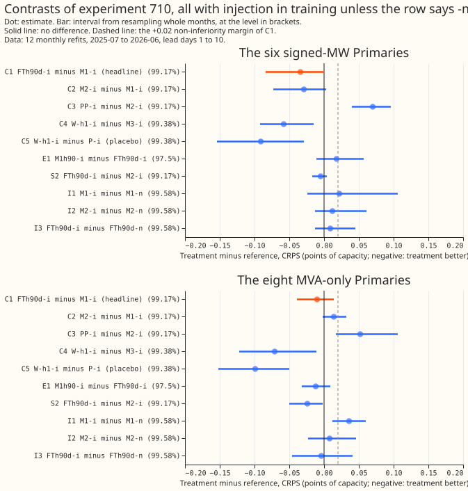
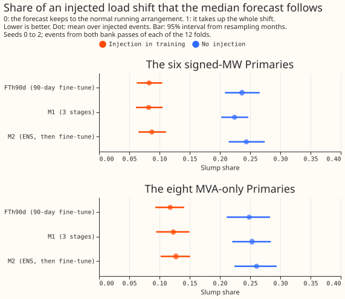
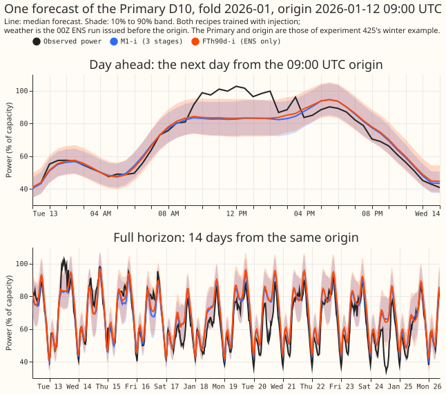
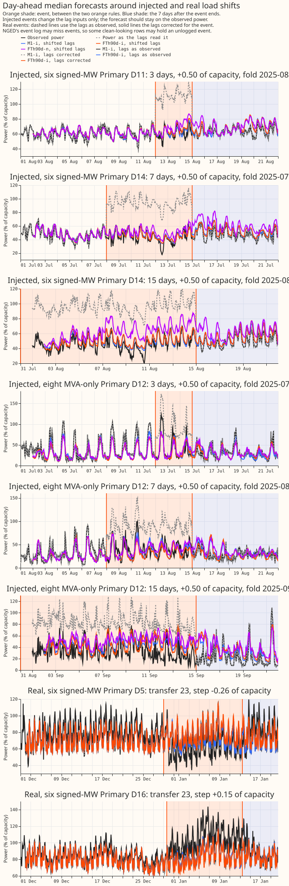

Can the demand neural network train on ECMWF ensemble forecasts alone, in one stage or with a recency-weighted final stage, and forecast as well as the 3-stage recipe that pre-trains on ERA5 and CAMS?
The ENS-only recipe FTh90d-i beat the 3-stage reference M1-i at the six signed-megawatt
Primaries, and its result at the eight MVA-only Primaries is inconclusive. "ENS-only" means
trained on the ensemble (ENS) forecasts of the European Centre for Medium-Range Weather Forecasts
(ECMWF) alone. The 3-stage reference first pre-trains on ERA5 (ECMWF's reanalysis of past weather)
and CAMS (the Copernicus Atmosphere Monitoring Service's solar estimates), then trains on the
archive of ENS forecasts, then fine-tunes on the last 730 days of ENS. "Primary" means a primary
substation. "The six" are the 6 Primaries whose telemetry is signed megawatts, and "the eight" are
the 8 Primaries whose telemetry is unsigned apparent power in megavolt-amperes (MVA). The suffix
-i marks a recipe trained with synthetic switching events injected into its lag inputs, and -n
marks one trained without them.
The pre-registered margin is 0.02 points of CRPS, and the rule gives partly supported. CRPS
(continuous ranked probability score) is in points of effective capacity, and lower is better. All
recipes train one pooled mixture density neural network, which is one neural network over all
Primaries that outputs a mixture of probability distributions. FTh90d-i skips the first stage and
fine-tunes with a 90-day half-life, so that a training row 90 days older than the newest counts half
as much. Its CRPS is 2.826 at the six and 3.596 at the eight, against 2.860 and 3.606 for M1-i,
which is 0.034 lower at the six and 0.010 lower at the eight. The contrast C1 (FTh90d-i minus
M1-i) at the six is -0.034 (99.17% interval -0.084 to -0.001), so the rule gives supported and
beats the reference. At the eight, C1 is -0.010 (-0.039 to +0.014), which alone would be
supported. A guard failed: with the Primary D8 left out, C1 is +0.012 (-0.013 to +0.038), so the
rule gives inconclusive. The eight's guard failed, and the six's lead is clear only on seeds 3 and
4 and in December to February (see "How far to trust this").
Injection cut the slump share by about 0.13 to 0.16 for every recipe, at no detectable CRPS cost
for the ENS-only recipes, and clearly raised the reference's CRPS at the eight. The slump share is
the fraction of an injected step that the median forecast follows (defined under "Slump into
switching events"). Over all rows, the CRPS of M1-i minus that of M1-n (I1) is +0.036 (+0.012 to
+0.060) at the eight. The same contrast is +0.008 for M2 (I2) and -0.004 for FTh90d (I3), with
intervals that include zero.
How far to trust this
The 90-day half-life, not the missing pre-training stage, drives most of the gap at the eight.
The minimal plan never gave the reference the 90-day half-life. The extension arm M1h90, which is
the reference with that half-life (E1), scores 3.588 at the eight against 3.596 for FTh90d-i. The
difference is not significant: E1 (M1h90-i minus FTh90d-i) is -0.012 (-0.032 to +0.009, 97.5%).
M1h90-i minus M1-i is -0.023 (-0.040 to -0.005, 95%, post hoc). The arm FTh90d-i remains the
pre-registered best ENS-only arm (B*) and the headline.
Injection harmed the reference more than the ENS-only recipes. I1 is +0.036 at the eight, and
the stored forecasts without injection give M2-n minus M1-n of +0.041 (+0.030 to +0.053, 95%),
so the headline holds only for neural networks trained with injection. The minimal plan stored no
-n state of FTh90d.
The six's lead sits in three winter months and in seeds 3 and 4. C1 is -0.126, -0.173, and
-0.070 in 2025-12, 2026-01, and 2026-02, and no larger than 0.020 in size in the other 9 months. On
seeds 0 to 2 it is -0.024 (-0.062 to +0.005, 95%), and on seeds 3 and 4 it is -0.045 (-0.088 to
-0.012). The result review found that M1-i scores 2.882 on seeds 3 and 4 against 2.864 on seeds 0
to 2 at the six, on its own row set, so part of the later lead is a worse reference. The t test on
the 12 monthly differences gives p = 0.077, which does not exclude zero at an uncorrected 95%.
Two of the eight Primaries, D8 and D22, carry the eight. C1 at the eight is +0.012 without D8 and +0.003 without D22.
The six is not separated from experiment 707's failed placebo. Whether ERA5 and CAMS help the
six was already unresolved in experiment
707. C2 (M2-i minus
M1-i, -0.029, -0.073 to +0.003) has the same sign as experiment 707's contrast.
The fine-tune is in effect a fixed one-epoch fine-tune. The selection set is unweighted. It
picked the first epoch in 58 to 60 of 60 fits of M1-i, M2-i, and FTh90d-i, and in 48 of 60
FTh90d-i fits the chosen state had a worse selection loss than the starting state. The fine-tune
still lowers test CRPS (M3-i minus M2-i is +0.078 at the six and +0.161 at the eight, post hoc).
The half-life comparison therefore compares one epoch of AdamW (an optimiser) at 2e-4, not selected
optima.
The events and the seeds are few. Each (fold, seed) has one injection world, so the injection
results rest on at most five draws per fold, and only two real events were clean enough to score.
The event log kept by National Grid Electricity Distribution (NGED) may miss events, so an "outside
events" half-hour may sit inside an unlogged event. The protected sunny slice
sunny_clear_sky_index was not built, so the verdict has no sunny guard, as the plan allows. The
permuted-age placebo P-i tests recency and season adjacency together, because it permutes ages
among whole calendar months, and the weather-shuffle placebo of experiment 707 was not rerun.
The experiment adopts nothing. The result applies to the pooled mixture density neural network of experiment 707, not to the modular neural network of the production service.
Figures




The example forecast is a winter origin, a favourable month for the ENS-only recipe. It shows the Primary D10 at the origin of experiment 425's winter example, with the full 14-day horizon (scoring uses lead days 1 to 10). C1 at the six is -0.173 in fold 2026-01, the largest of the 12 folds. The injected events in the fourth figure are the first event in fold order of depth 0.50 for each of the lengths 3, 7, and 15 days in each group, a rule fixed before looking. The real events are the December pair of D5 and D16, the only real events that experiment 580 verified and experiment 582 left usable.
Results
Headline CRPS and the error of the median
Every table gives CRPS in points of effective capacity. Lower is better. The brackets in this
table give the normalised mean absolute error (MAE) of the median forecast. The rows M1-n and
M2-n are the stored forecasts of experiment 707's A_F and R_F. The shared scoring rows number
2,922,247 half-hours across every arm and reference, after dropping 785 actuals that the
substation_zero rule flags. The Seeds column gives the seeds averaged.
| Arm | Seeds | The six | The eight |
|---|---|---|---|
M1-i |
0 to 4 | 2.860 (5.051) | 3.606 (6.537) |
M1-n |
0 to 4 | 2.838 (5.037) | 3.571 (6.470) |
M2-i |
0 to 4 | 2.831 (5.007) | 3.620 (6.571) |
M2-n |
0 to 4 | 2.819 (4.995) | 3.612 (6.565) |
M3-i |
0 to 2 | 2.922 (5.171) | 3.782 (6.879) |
W-h1-i |
0 to 2 | 2.864 (5.070) | 3.711 (6.750) |
PP-i |
0 to 2 | 2.913 (5.158) | 3.673 (6.685) |
P-i |
0 to 2 | 2.955 (5.216) | 3.810 (6.930) |
FTh90d-i |
0 to 4 | 2.826 (5.001) | 3.596 (6.520) |
FTh90d-n |
0 to 2 | 2.831 (5.016) | 3.604 (6.544) |
M1h90-i |
0 to 2 | 2.858 (5.049) | 3.588 (6.495) |
Inside logged events the injected state is worse at the six and slightly better at the eight; in
the week after an event, injection helps at the six for all three recipes that have both states
(M1, M2, and FTh90d). "Inside events" are the half-hours that NGED logged as inside a
switching event, "the 7 days after" are the half-hours in the week after an event ends, and
"outside" means neither. The two event slices share no row, and the smallest slice holds 9,376
half-hours in 7 months. For M2 at the six, the 7 days after score 3.524 injected against 3.747 not
injected, and inside events 8.771 against 8.386. No paired interval was computed for these absolute
differences, and the 95% intervals on the absolute values overlap.
| Arm | Seeds | Six: all | Six: outside | Six: inside | Six: 7 days after | Eight: all | Eight: outside | Eight: inside | Eight: 7 days after |
|---|---|---|---|---|---|---|---|---|---|
M1-i |
0 to 4 | 2.860 | 2.613 | 9.104 | 3.617 | 3.606 | 3.616 | 4.645 | 2.878 |
M1-n |
0 to 4 | 2.838 | 2.608 | 8.474 | 3.764 | 3.571 | 3.578 | 4.711 | 2.868 |
FTh90d-i |
0 to 4 | 2.826 | 2.593 | 8.796 | 3.420 | 3.596 | 3.605 | 4.710 | 2.843 |
FTh90d-n |
0 to 2 | 2.831 | 2.604 | 8.438 | 3.678 | 3.604 | 3.612 | 4.775 | 2.885 |
On sunny half-hours the ENS-only recipe and the reference score alike. On cold nights at the six,
FTh90d-i scores better than the injected reference and worse than the uninjected one, and at the
eight its point estimate is below both. The sunny slice is sunny_unit_shape, the descriptive
slice. Cold nights cover 7 months, so the absolute intervals are wide (2.378 to 5.539 for FTh90d-i
at the six). C1 on cold nights is -0.174 (-0.205 to -0.116, 90%) at the six and -0.126 (-0.173 to
-0.069) at the eight.
On sunny half-hours FTh90d-i scores 3.706 at the six and 4.850 at the eight, against 3.707 and
4.871 for M1-i. On cold nights it scores 4.399 and 3.228, against 4.573 and 3.354 for M1-i and
4.312 and 3.320 for M1-n. The other arms are in the private tables file.
The lower tail is over-covered and the upper tail is near nominal, in the same way for every arm,
and no arm ended its final stage at the epoch limit in more than 2% of fits. The share of actuals
below q05 is 0.022 to 0.038 (nominal 0.05), and below q95 is 0.930 to 0.964 (nominal 0.95). Only
W-h1-i and PP-i reached the limit, in 1 of 44 fits each, so no arm is labelled "not converged".
The label does not apply to the fine-tunes in any case, because a fine-tune is a fixed one-epoch
fine-tune. The median forecast is below the mean forecast at every Primary, by 0.07 to 1.8 points of
capacity.
Contrasts
Each row is treatment minus reference in CRPS, with the interval at the Bonferroni level of its family. The MAE of the median points the same way as the CRPS contrast in all 20 readings (table in the private tables file). The month-block bootstrap resamples whole forecast-origin months (100,000 resamples). C1 to C5 and I1 to I3 are pre-registered. E1 is a pre-registered extension. S2 is a secondary reading, the effect of the 90-day half-life on the ENS-only recipe.
| Contrast | Level | The six | The eight |
|---|---|---|---|
C1 FTh90d-i minus M1-i (headline) |
99.17% | -0.034 (-0.084 to -0.001) | -0.010 (-0.039 to +0.014) |
C2 M2-i minus M1-i (drop pre-training) |
99.17% | -0.029 (-0.073 to +0.003) | +0.014 (-0.002 to +0.032) |
C3 PP-i minus M2-i (one stage against two) |
99.17% | +0.070 (+0.040 to +0.096) | +0.052 (+0.017 to +0.106) |
C4 W-h1-i minus M3-i (recency weight against equal weights) |
99.38% | -0.058 (-0.092 to -0.015) | -0.071 (-0.122 to -0.011) |
C5 W-h1-i minus P-i (placebo) |
99.38% | -0.091 (-0.154 to -0.029) | -0.099 (-0.152 to -0.050) |
E1 M1h90-i minus FTh90d-i |
97.5% | +0.018 (-0.011 to +0.057) | -0.012 (-0.032 to +0.009) |
S2 FTh90d-i minus M2-i |
99.17% | -0.005 (-0.017 to +0.004) | -0.024 (-0.050 to -0.002) |
I1 M1-i minus M1-n |
99.58% | +0.022 (-0.024 to +0.106) | +0.036 (+0.012 to +0.060) |
I2 M2-i minus M2-n |
99.58% | +0.012 (-0.013 to +0.061) | +0.008 (-0.023 to +0.046) |
I3 FTh90d-i minus FTh90d-n |
99.58% | +0.009 (-0.013 to +0.045) | -0.004 (-0.046 to +0.041) |
The decision rule gives these readings.
- C1 at the six is
supported and beats the reference. The upper limit of the C1 interval is -0.001. Every guard held: C1 on seeds 0 to 2 is -0.024 and on seeds 3 and 4 is -0.045,FTh90d-iminusM2-iis -0.005, and the q01 and q99 tails, the five lead bands, and cold nights stayed within 0.05. - C1 at the eight is
inconclusive, because the guard "upper limit below +0.02 without D8" failed. C1 without D8 is +0.012 (-0.013 to +0.038, 99.17%). The other guards held. - C2 is -0.029 at the six and +0.014 at the eight. The eight has the sign of experiment 707 and a smaller size (+0.014 here against +0.041 there).
- C3 is +0.070 at the six and +0.052 at the eight, so the best one-stage recipe scored worse than the two-stage ENS-only recipe. The lower limit is +0.040 at the six, above the margin, and +0.017 at the eight, below it.
- C4 and C5 both lie below zero in both groups, so the rule's claim "a recency weight helps in one
stage" holds. The placebo is not neutral:
P-iminusM3-iis +0.033 (-0.010 to +0.078, 95%) at the six and +0.028 (-0.015 to +0.071) at the eight. C5 is therefore C4 plus the placebo's own loss, and C4 gives the size of the gain over equal weights. - E1 is explanatory and changes no verdict. Its guards failed on cold nights in both groups and
on lead days 2 to 7 at the six. At the eight
M1h90-iis 0.012 ahead ofFTh90d-i, and at the six it is 0.018 behind. - Injection (I1 to I3) did not show "no harm" for any recipe, because the upper limit stays above +0.02 in all six readings. The one clear harm is I1 at the eight (+0.036).
The prediction written before any fit was right on two counts, wrong on one, and mixed on one. C1 was predicted between -0.02 and +0.03 at the six and between 0 and +0.04 at the eight, and came out below both ranges, so that count was wrong. The placebo contrast C5 was predicted below zero at the eight, and is (-0.099), so that count was right. Injection was predicted to lower the slump share, and does, so that count was right. Injection was predicted to raise CRPS over all rows by under 0.02 (I1 to I3), which holds for I2 and I3 and fails for I1 (+0.022 at the six, +0.036 at the eight), so that count was mixed.
How much C1 depends on one Primary or one month
At the eight, C1 changes sign when D8 or D22 is left out, and at the six it does not. The lists give C1 with one Primary removed, at 95%; the guard in the decision rule uses 99.17%. At the six, C1 stays between -0.027 and -0.045, but the "beats" wording is fragile.
- The six, one Primary left out: D5 -0.027, D9 -0.045, D10 -0.032, D11 -0.041, D14 -0.030, and D16 -0.031. The interval reaches -0.000 without D5 (-0.059 to -0.000) or D10 (-0.073 to -0.000).
- The eight, one Primary left out: D2 -0.010, D3 -0.012, D4 -0.021, D8 +0.012 (-0.007 to +0.031), D12 -0.022, D19 -0.022, D21 -0.009, and D22 +0.003 (-0.024 to +0.030).
C1 at the six is concentrated in winter. C1 by fold at the six (2025-07 to 2026-06) is +0.001, -0.006, -0.011, -0.009, -0.010, -0.126, -0.173, -0.070, +0.005, -0.001, -0.019, and +0.020 (negative in 9 of 12 folds). At the eight it is -0.034, +0.022, +0.007, -0.062, +0.029, -0.087, -0.015, +0.010, +0.036, +0.001, -0.004, and -0.020 (negative in 6 of 12 folds). Without fold 2026-01, C1 is -0.021 (-0.047 to -0.002, 95%) at the six and -0.010 (-0.033 to +0.011) at the eight. The minimum detectable effect of the design is 0.018 points, from the seed-half differences (standard deviation 0.0253 over 12 folds).
Slump into switching events
Injection cut the slump share of every recipe from about 0.22 to 0.26 down to about 0.08 to
0.13. The slump share is sign(d) * (q50 with shifted lags - q50 with unshifted lags) / abs(d),
with d the depth of the injected event as a share of capacity. A forecast that keeps to the normal
running arrangement (NRA) scores 0, and one that takes up the whole step scores 1. The table gives
95% month-block intervals over events (144 events at the six, 192 at the eight) on seeds 0 to 2.
| Arm | The six: share (95% interval) | The eight: share (95% interval) |
|---|---|---|
M1-i |
0.082 (0.061 to 0.105) | 0.123 (0.095 to 0.150) |
M1-n |
0.224 (0.202 to 0.247) | 0.253 (0.220 to 0.284) |
M2-i |
0.087 (0.065 to 0.111) | 0.127 (0.102 to 0.151) |
M2-n |
0.244 (0.215 to 0.274) | 0.261 (0.224 to 0.294) |
FTh90d-i |
0.083 (0.062 to 0.105) | 0.118 (0.093 to 0.141) |
FTh90d-n |
0.236 (0.208 to 0.266) | 0.249 (0.211 to 0.283) |
The slump reduction (I4 to I6) is clear in every recipe and group. The paired difference in
slump share, -i minus -n, on seeds 0 to 2, is -0.142 (-0.169 to -0.118) at the six and -0.130
(-0.143 to -0.116) at the eight for M1, -0.156 and -0.133 for M2, and -0.154 and -0.131 for
FTh90d. All six upper limits lie below zero. The recipes without a fine-tune hold a larger share:
M3-i, W-h1-i, PP-i, and P-i (seeds 0 to 2) hold 0.10 to 0.11 at the six and 0.14 to 0.17 at
the eight, against 0.08 to 0.09 and 0.12 to 0.13 for M1-i, M2-i, and FTh90d-i.
The two real December events show a small slump share and an error against the NRA of 5 to 11 points of capacity. D5 and D16 were verified in experiment 580 (a step of -0.256 of capacity at D5 and +0.151 at D16). Across the three recipes, the slump share is 0.01 to 0.14 and the magnitude of the error against the NRA is 5.4 to 11.3 points, with no interval. Only the injected state was stored for these events, so they cannot show what injection changed.
Checks
- Audit trigger 2, a result contradicts its prediction: fired. C1 lay below both predicted
ranges and I1 above the predicted bound. The session tested an explanation: E1 shows that the
90-day half-life accounts for most of the eight's gap, and I1 to I3 and
M2-nminusM1-nshow that injection hurts the reference more. - Audit trigger 4, leaving one Primary out flips a sign: fired. At the eight, C1 turns positive
without D8 (+0.012) or D22 (+0.003). The verdict at the eight is
inconclusivefor this reason. At the six no sign flips. - Audit trigger 5, a nested arm beats the one that contains it: weakly fired.
M2-i, which drops ERA5 and CAMS, scores better thanM1-iat the six (-0.029, interval includes zero). Experiment 707's placebo failed at the six, so the six's sign is not attributed to the weather data. - No separate audit has run. The adversarial result review (
result_review_1.md, in the private briefs folder) re-derived the headline contrasts from the stored forecasts with its own code, within 0.004 points of the scorer. Whether that review stands in for the audit is for the maintainer to decide.
This verdict adds no not supported or refuted to the theme's stop-rule count, which holds four
not supported verdicts on recency weighting (experiments 331, 407, 419, and 466) and one on
one-shot ENS training (experiment 519). Experiment 419's verdict covers a bundle of three changes,
and its 0.25-year half-life arm was mixed (higher signed-MW six CRPS, lower CRPS at D15 and D18), so
the count of four includes one verdict that is not purely a recency-weight result.
What was not run
Several pre-registered arms and contrasts were not run, because the minimal plan and the E1 and E2
subset never included them and the rest of the extension was not released. The arms S, HW730,
W-h0.5, and W-h2 have tuning scores only (folds 2025-03 and 2025-06, two seeds), so C6 (S-i
minus W-h0.5-i) and C7 (HW730-i minus M3-i) have no reading. W-h1 was scored in the -i
state only. The -n states of M3, W-h1, PP, and P were not fitted, and FTh90d-n has seeds
0 to 2 only. The scorer does not print the scores of the reference rows (climatology, BG2, the
manual heuristic, and S0M), so experiment 707's scores stand for them. Per-Primary tables and the
D15 and D18 scores were not produced.
What to try next
These are options, not commitments.
- Fit the reference with the 90-day half-life in every group and state, with a second set of
injection worlds.
M1h90-iran with seeds 0 to 2 only. - Select the fine-tune on a recency-weighted held-out set, or admit the pre-fine-tune state as a candidate, and fit the one-epoch fine-tune as such.
- Replicate the eight without D8 and D22, or add Primaries, before claiming that a recipe matches the reference at the MVA-only Primaries.
- Test a winning recipe on the modular neural network of the production service after the points above.
Method
The neural network is the pooled mixture density network of experiment 707, with a widening of 1.15. Its input has 46 columns, including 3 origin lags and an 8-wide Primary embedding. It has 2 layers of width 64 with the Gaussian error linear unit (GELU) activation, dropout 0.1, 3 mixture components, and 11 quantile levels. The window F of experiment 707 supplies the ENS rows (2021-07-20 on).
- Stages:
M1(the reference) trains on ERA5 and CAMS, then ENS from 2021-07-20, then 730 days of ENS at a 0.5-year half-life.M2skips the first stage.M3isM2without the fine-tune.FTh90disM2with a 90-day half-life in the fine-tune,FTh1has a 1-year half-life, andM1h90isM1with the 90-day half-life.W-h1is one stage from scratch with an exponential loss weight at a 1-year half-life.PPis one stage with a half-life per Primary.PisW-h1with the weights' ages permuted among whole calendar months. The tuning-only arms areW-h0.5,W-h2,S(a half-life that shortens over epochs 1 to 6),HW730andHW365(hard windows of the last 730 or 365 days),FLR,SMP,RFE,EMA, andCYC(weight floor, sampling probability, recent-only final epoch, weight averaging, and warm restarts). - Choices on the tuning folds: the four tuning folds (2024-10, 2025-01, 2025-03, 2025-06) chose
B*, the best ENS-only recipe by mean CRPS on folds 2025-03 and 2025-06 (interim, two seeds):FTh90dat 4.186, againstM2at 4.221 andM1at 4.153. They also choseO*, the best one-stage recipe (PP), andh_T, the half-life ofWandP(1 year). The per-arm tuning scores are in the private tables file. - Plan and size: the recipes, the contrasts, and the decision rule were fixed before any fit and
are in the front matter and this section. The minimal plan was sized at about 380 fits and 8 to 10
GPU-hours. The logs hold 542 fits and 13.0 hours of summed wall-clock: 470 fits and about 11.2
hours in the minimal plan (tuning folds, scored folds, and seeds 3 and 4), and 72 fits and about
1.8 hours in the extension subsets (E1: 36 fits of
M1h90-i; E2: 36 fits ofFTh90d-n, plus the bank passes of the storedM1-nandM2-n). - Training: fresh AdamW at 5e-4 for a stage from scratch and 2e-4 for a stage that follows
another, batch of 16,384, weight decay 1e-3, gradient clip 1.0, patience 6, and a loss of
(w * nll).sum() / w.sum(). Every stage is selected on an unweighted held-out setV_selof held-out weeks in the last 730 days. Fits ran on the workstation's GPU, one fit per job. - Injection (
-i): the generatorsynthetic_cleanof experiment 581 adds a shift of 3, 7, 15, or 30 days, a depth of 0.15, 0.30, or 0.50 of capacity, and a random sign, to the power in the three lag inputs only, until 5% of the half-hours are covered. The shift never enters the target. One world per (fold, seed) serves every stage and epoch, with seed 7,100,000 + 1,000 times the network seed + YYYYMM. The scoring bank iscontaminateof experiment 581, with passeskandk+12for foldk. The weights of an injected event are those of the rows whose lags it shifts. The mean share of rows with a shifted lag is 0.064 to 0.065. - Scoring: 12 monthly folds (2025-07 to 2026-06), CRPS (twice the mean pinball loss over 11
quantiles) at lead days 1 to 10 in points of effective capacity, month-block bootstrap on
seed-averaged forecasts with 100,000 resamples, Bonferroni levels 99.17% (R, 6 readings), 99.375%
(W, 8), 97.5% (E, 2), and 99.58% (I, 12), and guards from the decision rule. The seeds are 0 to 4
for
M1,M2, andFTh90d, and 0 to 2 for the others. All Primaries use the same cleaning and row setfold_a_daily_gap_v1. - Weather at origin: every row reads the 00Z ENS run issued 9 hours before its origin, the lags are at least 3.5 hours old, and the code asserts this on every row. Experiment 404's voided lag-free scores above 24 hours play no part, since the neural network has no lag-free head.
- Departures from the plan:
O*changed fromCYCtoPPon the tuning folds before any scored fold read it (twoCYC-ifits at 2025-07 remain, unscored). The summed fit time is the wall-clock sum over the logs, not GPU time. The scorer works on cached sums by slice, month, and label, andOutsideScorerine00710_report.pyre-derives the "outside events" scenario.
Files
- Code:
ml-experiments/00710-ens-only-one-shot-training-recipe/, with scriptse00710_arms.py(arms and jobs),e00710_fit.py(the fits),e00710_folds.py(rows and folds),e00710_inject.py(the injection),e00710_known_answer.py(the seven tests),e00710_net.py(the neural network and loop),e00710_score.py(the scorer),e00710_weights.py(the weight rules),e00710_report.py(every number on this page, and the four figures),run_phase.sh,E1_E2_commands.md, andNOTES_for_reviewer.md. To redraw the figures and reprint the numbers, runrun_phase.sh e00710_report.py. - Reused code: experiments 707, 581, 699, 587, and 425 (imported through
PYTHONPATH; none edited). - Figures:
contrasts.svg,slump_share.svg,example_forecast.svg, andload_shift_events.svgin this folder. - Private data:
data/ml-experiments/00710-ens-only-one-shot-training-recipe/work/(models/,pretrained/,seed_preds/,bank/,score_cache/,known_answer/,logs_run/,report_cache/,report_tables.md, andtuning_choices.json). - Private tables cut from this page:
data/ml-experiments/00710-ens-only-one-shot-training-recipe/report_tables.mdholds the scenario tables with MAE, the subset sizes, the sunny and cold-night tables for every arm, the slump share by phase, the real-event rows, the coverage, convergence, median-minus-mean, and tuning tables. - Private briefs:
data/ml-experiments/briefs/ens_one_shot/(design.md,design_review.md,findings.md,code_review_1.mdtocode_review_4.md,result_review_1.mdand its scripts and logs).